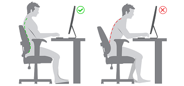

Cómo mantener una buena postura frente el computador

¿Cómo debemos tener buena postura al momento de estar en el computador?
Cuello:
mantén la mirada siempre hacia el frente, evitando doblar el cuello, la parte superior de la pantalla debe quedar a la altura de tu línea horizontal de visión.
Hombros:
siempre los debes tener relajados.
Codos:
déjalos apoyados y pegados a tu cuerpo manteniendo un ángulo entre los 90° y 100°.
Brazos:
no digites con los brazos en suspensión.
Antebrazos:
apóyalos sobre el escritorio, la silla que utilices también debe contar con apoya brazos.
Muñecas:
tienen que estar relajadas, alineadas respecto al antebrazo, evitando desviaciones o posiciones no naturales.
Espalda:
debes mantener su curvatura natural y siempre apoyarla por completo en el respaldo de la silla.
Cadera:
mantén un ángulo de entre 90° a 100°, con los muslos paralelos al suelo.
Rodillas:
deben formar un ángulo mayor a 90°, evita flectar las piernas a la altura de la cadera.
Pies:
mantenlos completamente apoyados sobre el piso.
Vista:
cada cierto tiempo realiza el ejercicio de mirar un punto lejano -por ejemplo, mirar hacia alguna ventana- por algunos segundos, así podrás relajar los músculos oculares.